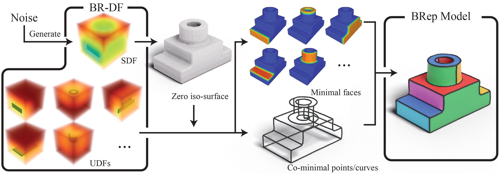
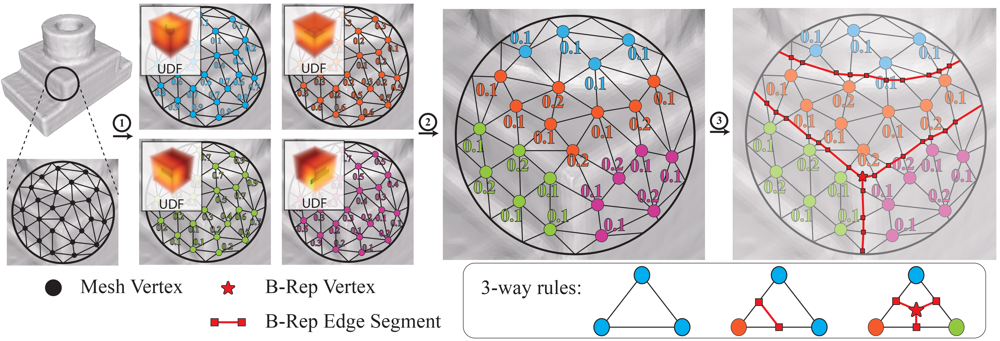
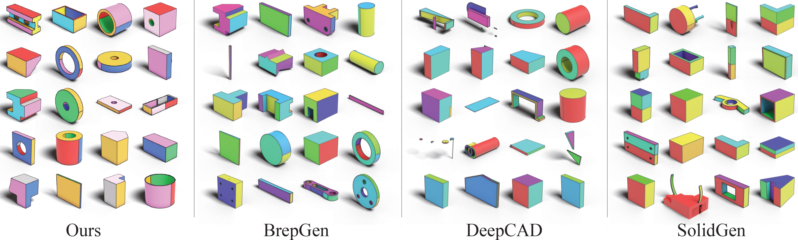
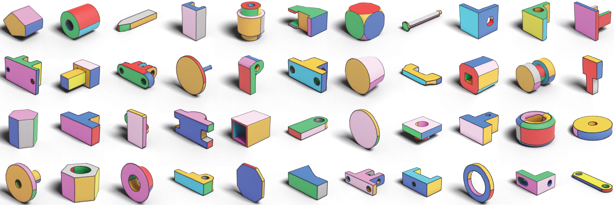

This paper presents a novel geometric representation for CAD Boundary Representation (B-Rep) based on volumetric distance functions, dubbed B-Rep Distance Functions (BR-DF). BR-DF encodes the surface mesh geometry of a CAD model as signed distance function (SDF). B-Rep vertices, edges, faces and their topology information are encoded as per-face unsigned distance functions (UDFs). An extension of the classical Marching Cubes algorithm converts BR-DF directly into watertight CAD B-Rep model (strictly speaking a faceted B-Rep model). A surprising characteristic of BR-DF is that this conversion process never fails. Leveraging the volumetric nature of BR-DF, we also propose a multi-branch latent diffusion with 3D UNet backbone for jointly generating the SDF and per-face UDFs of a BR-DF model. Our approach achieves comparable CAD generation performance against SOTA methods while reaching the unprecedented 100% success rate in producing (faceted) B-Rep models.




@article{Zhang2025brdf,
author = {Zhang, Fuyang and Jayaraman, Pradeep Kumar and Xu, Xiang and Furukawa, Yasutaka},
title = {B-Rep Distance Functions (BR-DF) How to Represent a B-Rep Model by Volumetric Distance Functions?},
journal = {arXiv},
year = {2025},
}
This research is partially supported by NSERC Discovery Grants, NSERC Alliance Grants, and John R. Evans Leaders Fund (JELF). We thank the Digital Research Alliance of Canada and BC DRI Group for providing computational resources.